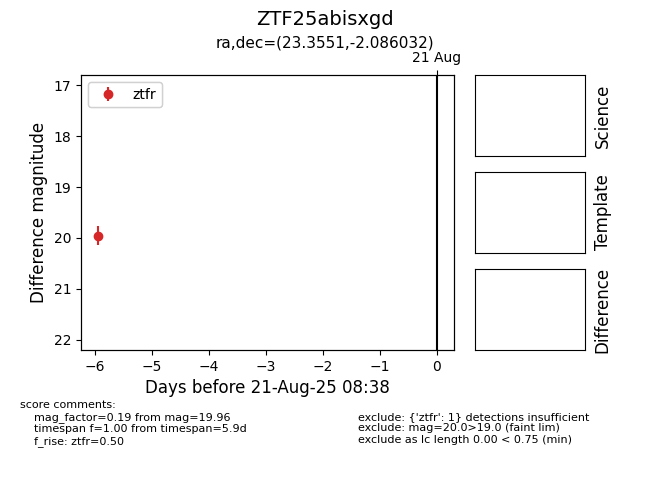

Target ZTF25abisxgd at 2025-08-21 08:38, see:
FINK: fink-portal.org/ZTF25abisxgd
Lasair: lasair-ztf.lsst.ac.uk/objects/ZTF25abisxgd
ALeRCE: alerce.online/object/ZTF25abisxgd
alt names
ZTF25abisxgd (ztf,alerce)
coordinates:
equatorial (ra, dec) = (23.3551,-2.08603)
galactic (l, b) = (146.5829,-63.01377)
photometry
last ztfr=19.96
1 ztfr detections
